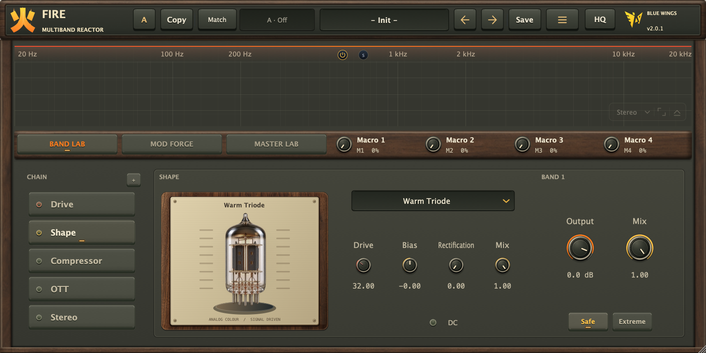
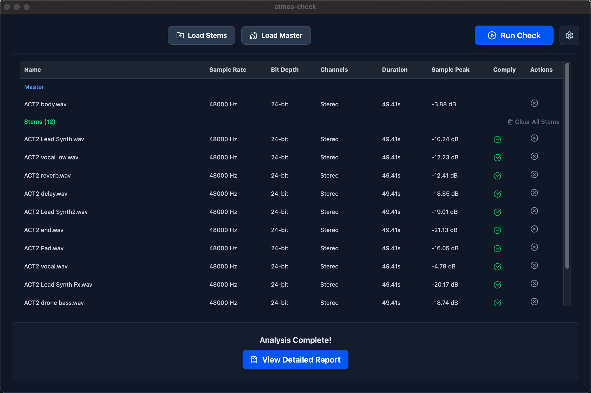

01 / SOUND SHAPINGFIRE

羽翼深蓝 / YIFENG YU
在声音与代码之间，创造更多可能。
音乐制作人，也是独立开发者。
创作沉浸式的声音，也打磨让创作更自由的工具。
01 / SELECTED WORK
每一个工具，都始于创作中的一个真实问题。
从声音塑形到工作流，把想法变成日常。



02 / THE OTHER SIDE

FEATURED RELEASE / EP
羽翼深蓝 / BLUE WINGS
走进梦的深处，听见声音的边界。
一场以电子音乐与杜比全景声构建的沉浸式旅程。
03 / BEHIND THE WORK
你好，我是 Yifeng Yu，也以「羽翼深蓝 / Blue Wings」的名字创作音乐。
我游走在音乐制作与软件开发之间。喜欢电子音乐的无限可能，也着迷于空间音频带来的临场感。创作中遇到的问题，常常会成为我开发下一个工具的起点。
从一段旋律到一行代码，我在意的始终是同一件事：让想象中的体验，真实发生。
04 / LET’S CONNECT
GOOD THINGS START WITH A CONVERSATION.聊音乐、聊工具，或是聊聊你的下一个灵感。